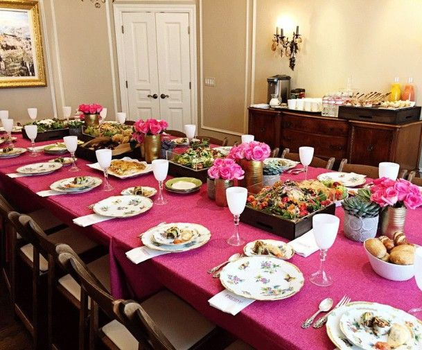

Chanuka stories

By Rav Michoel Moyal
It was an extremely wintry night. Annoying raindrops splashed the faces of the passersby. This was not a good reason to refrain from going on Mivtza Chanuka which the Rebbe established. The goal is to bring light to every home, to every Jew, wherever he might be, even in a hospital room, behind bars, or a soldier at his post who is tensely watching the border.
This is why Rabbi Michoel Moyal, director of the Chabad House at yishuv Aderet in the Mateh Yehuda region, went out that night, the second night of Chanuka, to the nearby IDF base, in order to light the menorah and bring the joy of the holiday to hundreds of soldiers who were on base and wished for warm holiday cheer.
Taking along boxes of doughnuts, bottles of vodka, Chanuka gelt and brochures, R’ Moyal arrived at the base together with other Chabad Chassidim. The base guard was already familiar with the smiley man with the flowing white beard and opened the gate for him. Not everyone was allowed to enter, but a Lubavitcher, a shliach of the Lubavitcher Rebbe, was allowed in.
At that exact time, a large assembly for one of the brigades came to an end. Hundreds of soldiers stood ready at parade, and at the command issued by the officer continued to stand there, ready for the menorah lighting ceremony. The megaphone was given to R’ Moyal and he was invited to address the troops.
He briefly explained the significance of Chanuka, the victory of the Maccabees over the Greeks, of purity over impurity, the many in the hands of the few. One big miracle that lights up the world since that time.
Upon lighting the menorah, R’ Moyal began giving out doughnuts. He heartily wished each of the hundreds of soldiers “Chanuka sameiach.”
Out of the blue, someone half declared, half asked, “Rabbi Michoel?!”
R’ Moyal instinctively turned his head toward the questioner and was surprised to see a female soldier who appeared both smiling and somewhat startled. He immediately recognized her; her name was Ohr, a resident of Aderet.
“She ran toward me and emotionally asked, ‘Has the Rav come here too?!’ I was also happy to see her and wished her a Chanuka sameiach. I told her that when I returned to the yishuv, I would send her warm regards to her parents.
“Then, a distant memory flashed in my mind. It was a memory that provided closure 19 years later!
“I told her that I had suddenly remembered something in connection with her that I wanted to share with her. She was surprised and suggested we go with the other soldiers into the nearby mess hall where I could tell everyone.
“When we entered the hall, I pointed at Ohr and said that by wondrous divine providence I just met her here, in this place and on this Chanuka night.
“It was on Chanuka, 19 years ago, at moshav Aderet. I was already operating there as a shliach of the Lubavitcher Rebbe, and in honor of the holiday I arranged a menorah lighting ceremony for the residents of the yishuv. That night, for some reason, I decided to invite Ohr’s father, Mr. Shaul Attias, who was a senior officer in the army, to light the menorah.
“When it was time for the menorah lighting, the people had already gathered, and everything was ready, aside for the guest of honor who had not yet arrived. I was a bit surprised at the tardiness of Mr. Attias but a few minutes later I saw him approaching quickly. He came over to me, grasped my arm and apologized quietly, saying he could not light the menorah since he was rushing to the hospital with his wife who was giving birth.
“I insisted that he light the menorah and then go, and said that in the merit of doing this, the birth should go easily.
“And that’s what happened. He lit the menorah and went right to the hospital with his wife. Their daughter Ohr was born that night. She is the soldier who is serving among you tonight on this base. During her childhood, Ohr participated in many of the activities at the Chabad House. Now, when I saw her here on base, it was a pleasant surprise. I couldn’t help but remember that Chanuka night 19 years ago.”
R’ Moyal concludes, “The soldiers were all moved by the story. We sang Chanuka songs and the soldiers put their hands on one another’s shoulders and danced merrily.”
CHANUKA PARTY WITH A PURPOSE
By Rabbi Yoav Zev Robinson
My wife and I went out on Chanuka mivtzaim to Kibbutz Kfar HaNasi. Beis Chabad Kibbutzim supplied us with addresses so we would know where to visit. There are families on kibbutzim that are in touch with Chabad year-round and Chanuka is another key point of contact. For me, it was a nice experience to go back to the kibbutz where I was born and grew up during most of my childhood years. I am familiar with the pathways in the kibbutz and was happy to go back as a Chassid.
After driving for half an hour from Tzfas, we arrived at the kibbutz and started going from house to house. We had doughnuts and menorahs but every house we went to had a lit menorah already. All we did was give out doughnuts and repeat an idea from a sicha of the Rebbe about Chanuka along with blessings for the holiday.
We finished our rounds at 10:30. My wife (who was in the early stages of pregnancy) and I were hungry and tired. I was also feeling disappointed. Was that all I accomplished – to enable people to make a bracha over a doughnut? Divrei Torah could be sent in the mail. I shared these thoughts with my wife but she encouraged me to continue to the trailer park area where the kibbutz rents apartments to young students; maybe we’d meet someone there who did not yet light the menorah. I tried to dissuade her from this idea and suggested we return to Tzfas, but she insisted.
We knocked lightly at the door of the first house and nobody answered. I thought we should go back but my wife was more determined. “Let’s move on to the next house.” So we went to the next caravan.
As we stood at the entrance to the trailer, we noticed that a window was open wide and a young woman was sitting inside and sobbing. It was uncomfortable for us and we considered retreating, but in the end we decided that heaven had brought us here at this time. We hesitantly knocked at the door. A few moments went by and the woman opened it. When she saw us, her choked voice expressed her surprise. A few more moments passed until she was completely calm and she invited us in. We saw a table laden with goodies, doughnuts and latkes.
She said to us, “You must be wondering why everything is ready for a party and why I’m crying. I will tell you.” She said that she had decided to host a big Chanuka party that year. She was a student at a local college and she invited all her friends from the kibbutz and nearby kibbutzim. They confirmed their attendance and she ordered a lot of food and drinks. From early morning on, she had worked to prepare the food and now, at the time for the party, nobody had come!
When she began making inquiries about where people were, one by one they responded with apologetic texts. She realized that no party would be taking place and she would be left alone with all the food she prepared.
She was heartbroken and that is how we found her, sitting and crying. A long time passed before she heard our knock at the door. “You are like angels from heaven,” she said.
It took her a long time to get over our unexpected arrival. We were as excited as her! For two hours we sat with her, lit the menorah that was set up there, tasted the things that we were able to have, spoke about Chanuka and the lessons to learn for nowadays.
She was not at all religious and she heard basic concepts about Torah and Chassidus for the first time. She was very enthusiastic and asked for the address of Machon Alte, a seminary for baalos teshuva in Tzfas.
When we returned to Tzfas, we felt that the entire trip was just for that girl.
CHANUKA MIRACLE IN THE OLD AGE HOME
By P. Zarchi
“The old age home was our baby,” recounted one of the shluchos who works on the Rebbe’s shlichus in one of the northern cities of Eretz Yisroel. “Every Friday, my daughters and I went to light candles with the residents there. Before holidays, we visited the old folk and on Chanuka we went with reinforcements to bring joy to people who hardly see the light of day.
“My daughters became attached to the women and would call them savta.
“Among the residents was Savta Batya the Yemenite, and Savta Yehudit who sometimes screamed, and there was also Savta Didi. No, that wasn’t her real name but those were the only sounds this dear woman managed to say. Veteran nurses said that she had burned her tongue and ever since was unable to talk. The only thing she mumbled all day was, ‘Dididididi.’ Hence, her name.
“Since she was unable to say the words of a bracha, her husband would say the blessing over the Shabbos candles for her every Friday. She would accompany him with her mumbling sounds.
“And so we went there, for years. One year, during Chanuka, we found out that Savta Didi’s husband had died. When we arrived at her room on Erev Shabbos Chanuka, she greeted us with sad mumbling. I went over to her and explained that for lighting the menorah we had found a replacement for her dear husband, but for the Shabbos candles there was nobody else and she had to say the bracha.
“My young daughter, who regularly lit with her, went over to her and began to say the words of the bracha as Savta Didi, as usual, made her strange sounds. ‘No,’ insisted my daughter. ‘Repeat after me, “Boruch … ata …”’
“And then suddenly, with no prior warning, Savta Didi opened her mouth and with great effort she said, ‘Boruch.’ Clearly! And she said the following words of the bracha. I hugged her excitedly and we were all in tears over this personal Chanuka miracle.”
Beis Moshiach (staff). "Chanuka stories." Beis Moshiach, no. 1143 (November 27, 2018).